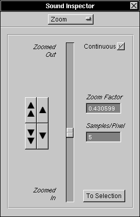

You can also perform many of the zoom functions described below with the Zoom Menu.
The Zoom Inspector
The Zoom Inspector allows you to zoom your sound display in and out. To display the Zoom Inspector, you need to bring up the Sound Inspector with the Tools Menu, and then choose Zoom: 
You can also perform many of the zoom functions described below with the Zoom Menu. 

 The Zoom Slider lets you change the Zoom Factor from 0 (Zoomed In) to 1 (Zoomed Out), or to any value in between. The Zoom Slider changes automatically to reflect any sound's Zoom Factor. Choosing Continuous tells Resound to continuously update the Sound View as you're dragging the slider.
The Zoom Slider lets you change the Zoom Factor from 0 (Zoomed In) to 1 (Zoomed Out), or to any value in between. The Zoom Slider changes automatically to reflect any sound's Zoom Factor. Choosing Continuous tells Resound to continuously update the Sound View as you're dragging the slider.
 The Zoom Factor shows the amount of zooming as a number between 0 and 1 (see above).
The Zoom Factor shows the amount of zooming as a number between 0 and 1 (see above).
 The Samples/Pixel field gives the current number of sound samples (for one channel) computed as a single pixel in this zoom factor. For efficiency, NeXT's Sound Views can only display Zoom Factors such that the Samples/Pixel is a whole number, so arbitrary scaling is not possible.
The Samples/Pixel field gives the current number of sound samples (for one channel) computed as a single pixel in this zoom factor. For efficiency, NeXT's Sound Views can only display Zoom Factors such that the Samples/Pixel is a whole number, so arbitrary scaling is not possible.
 The Button Matrix lets you either zoom all in or all out (the double triangles) or in and out by one Sample/Pixel (the single triangles).
The Button Matrix lets you either zoom all in or all out (the double triangles) or in and out by one Sample/Pixel (the single triangles).
 By choosing To Selection you can zoom so that the selected sound fills the window.
By choosing To Selection you can zoom so that the selected sound fills the window.
For more information on Zoom Factors, press here: